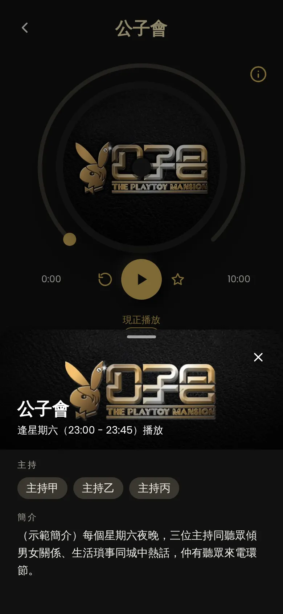
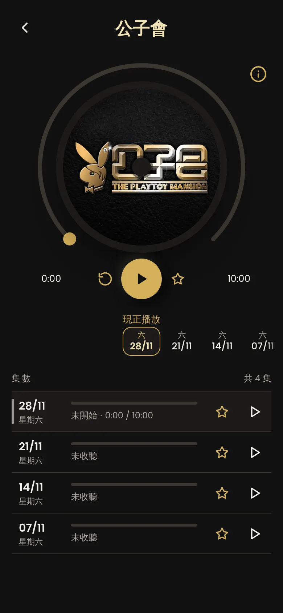
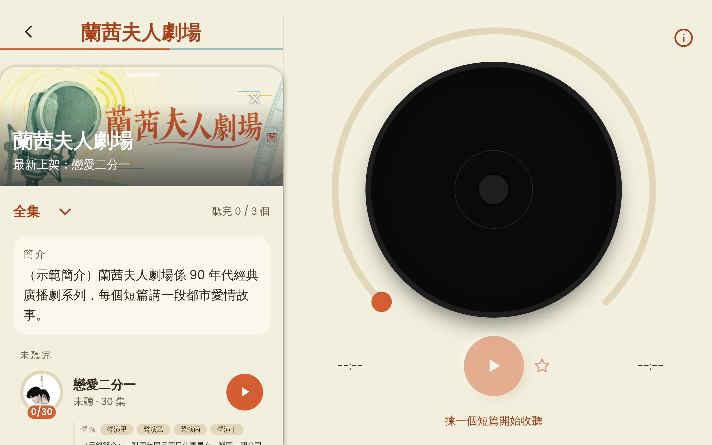
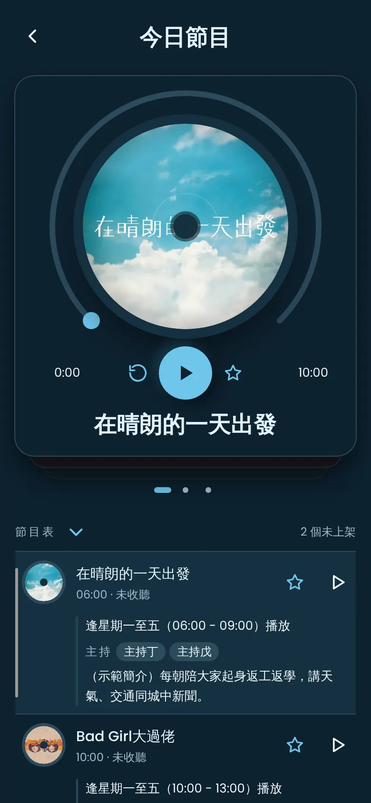
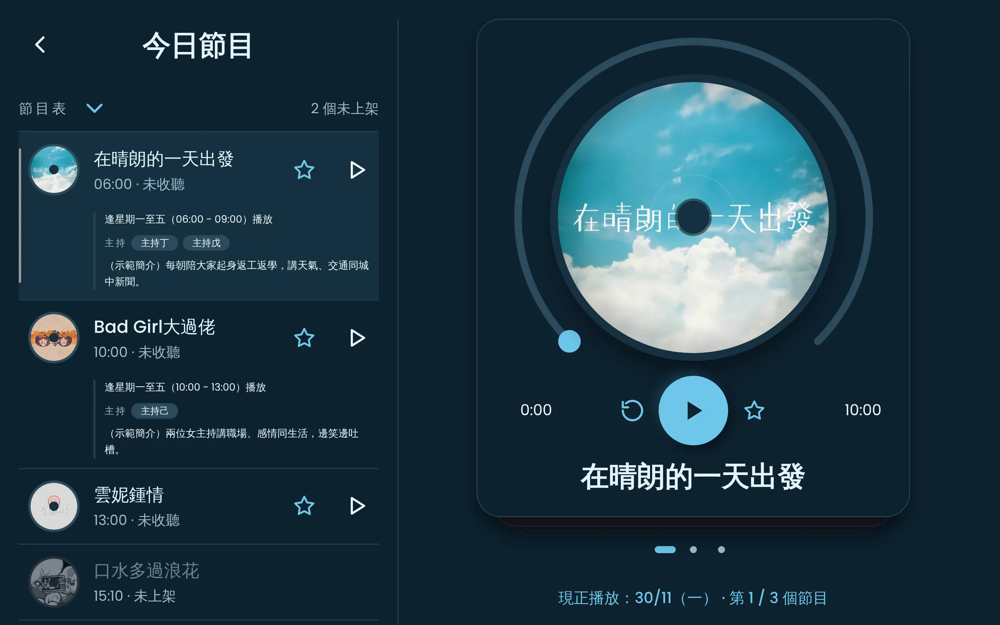

規則
- 簡介 / 主持 / 聲演 / 播放時間有任何一項先出 ⓘ / 箭咀；淨有星期幾唔算
-
ⓘ 喺唱片圈右上角、冇底色，離畫面右邊同返回掣離左邊一樣；撳開獨立資料
sheet（直版底部、橫版右欄，撳左欄任何掣就閂）
-
Banner：tile 圖 64:27 貼 sheet 頂；名 + 細字疊左下角（節目 = 播放時間；短篇劇
=「最新上架：短篇」；每日劇冇）；✕ 疊右上角
- 劇集冇簡介時，短篇 sheet 用短篇 banner（大字短篇名、細字劇集名）
-
全集 sheet：頂部劇集 banner（冇簡介都出）；「全集」旁箭咀展開劇集簡介 + 每個短篇聲演
/ 簡介（伸到播放掣下面）
- 今日節目頁：「節目表」旁箭咀展開每行播放時間 / 主持 / 簡介；卡片唔加 ⓘ
-
第一次入（冇進度、冇載入、唔係由收藏入）自動彈 /
展開，之後收合；揀未聽短篇自動彈短篇 sheet；admin 改內容唔再彈
- 播放時間：「逢星期六（23:00 - 23:45）播放」/「逢星期六播放」/「每日（…）播放」
- 箭咀轉 90° 同展開動畫只喺冇開「減少動態」時播
節目頁

直版：第一次入自動彈

閂咗之後：唱片圈 ⓘ
橫版：右欄 sheet
短篇劇
全集 sheet 展開（第一次入）
全集 sheet 收合
揀短篇：劇集 banner + 短篇
劇集冇簡介：短篇 banner

橫版全集 sheet（左欄）
橫版短篇 sheet（右欄）
橫版：劇集冇簡介
今日節目頁

直版：節目表展開

橫版：節目表展開